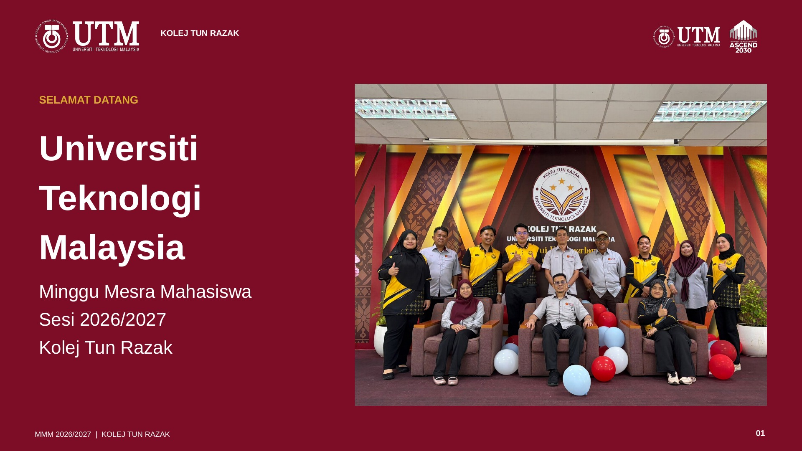

Aluan Menjalankan Tugas Pengetua
Prof. Madya Dr. Mohd Murtadha bin Mohamad

Skrin direhatkan · Tekan B untuk kembali
Slaid tidak dapat dimuatkan. Semak sambungan internet atau buka fail PDF.
← → atau Space untuk menukar slaid · F untuk skrin penuh · B untuk rehatkan skrin